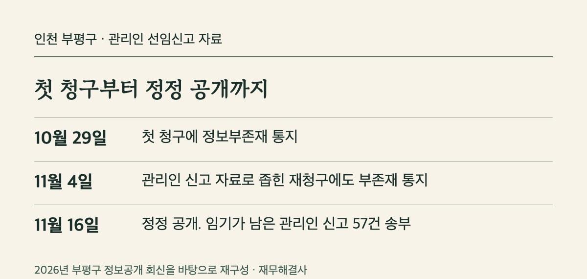

두 번의 ‘자료 없음’ 끝에 나온 57건
오피스텔·지식산업센터 관리 기록을 수도권 67곳에 물었다
이형준 공인회계사 · 2026년 11월 25일
11월 4일, 인천 부평구에서 관리인 선임신고 자료가 없다는 두 번째 통지서를 받았습니다. 12일 뒤 같은 구청에서 엑셀 파일이 왔습니다. 11월 13일 기준으로 임기가 남은 관리인의 선임신고 57건이 담겨 있었습니다. 저희는 두 번째 통지를 받은 날 행정심판을 청구했습니다. 구청은 앞선 결정을 정정해 자료를 공개했습니다.
저희는 회계사로서 어느 집합건물이 감사 대상인지 파악하려고 자료를 찾았습니다. 10월 24일, 서울·인천·경기 67개 시·군·구에 관리인 선임신고와 회계감사 기록을 청구했습니다. 새 통계를 만들 필요 없이 기존 신고서나 공문의 해당 부분만 보내 달라고 했고, 관리인 개인의 이름과 사적 연락처는 뺐습니다. 회신을 읽다 보니 입주자에게도 같은 질문이 남았습니다. 내가 관리비를 내는 이 건물은 누가 관리하고, 지난해 회계감사는 받았을까?

신고서는 있는데, 한 건씩 열어봐야 한다
서울 금천구 지역경제과는 지식산업센터의 관리인 선임신고서를 접수해 수리한다고 답했습니다. 다만 신고 내용을 별도 대장이나 전산자료로 관리하지 않아, 건물별 현황을 알려면 관내 지식산업센터 125개의 신고서를 일일이 열어 항목을 옮겨야 한다고 했습니다. 구청이 신고를 한 건씩 처리해 왔어도 어느 센터가 언제 신고했는지 한눈에 볼 목록은 없다는 답이었습니다.
현장에서 확인한 감사도 회신에서는 찾기 어려웠다
경기 구리시의 공개 민원 답변에는 날짜까지 나옵니다. 시는 2025년 7월 2일 갈매역의 한 지식산업센터를 현장 확인했고, 그 건물이 2023회계연도 감사를 2024년 9월에 받았다고 답했습니다. 그런데 2026년 11월 4일 저희에게 보낸 회신에는 2023년 이후 회계감사 자료가 ‘부존재’로 적혀 있었습니다. 시가 감사보고서 사본까지 보관했는지는 알 수 없습니다. 다만 입주자가 우리 청구 회신만 읽었다면, 시가 그 건물의 감사 사실을 확인한 적이 있다는 것조차 알기 어려웠을 겁니다. 구리시의 2025년 7월 민원 답변
오피스텔에서도 기록은 생활비와 맞닿아 있습니다. 김포의 한 오피스텔 입주민들은 시행사가 고른 관리업체에 수년간 관리비를 냈지만 사용 내역을 알기 어렵다며 경기도에 도움을 청했습니다. 경기도는 입주민에게 관리단 집회를 여는 절차와 관리업체를 바꾸는 방법을 안내했습니다. 경기도가 소개한 김포 오피스텔 사례
945곳 중 몇 곳이 감사를 받았을까
11월 22일까지 저희가 시·군·구 회신과 경기도 보충자료를 모아 정리한 집합건물은 잠정 2,015곳입니다. 그중 자료에 150호 이상으로 표시된 곳은 945곳이었습니다. 연간 감사 의무는 전유부분 수에 더해 직전 회계연도의 관리비 징수액이나 수선적립금 등 법정 요건을 살펴야 하고, 적법하게 그해 감사를 생략하기로 의결한 경우도 있습니다. 그래서 이 자료만으로 945곳 가운데 몇 곳이 감사 의무를 이행했는지, 몇 곳이 어겼는지 계산할 수 없습니다. 집합건물법 제26조의2 · 같은 법 시행령 제6조의2
입주자에게 필요한 답은 구체적입니다. ‘지난해 감사를 받았다면 결과를 어디에서 볼 수 있습니까? 생략했다면 언제 어떤 결의를 했습니까?’ 저희는 지자체가 이미 접수한 선임신고와 현장에서 확인한 감사 이력부터 건물별로 찾아볼 수 있으면 좋겠습니다. 구청이 다음번에 같은 질문을 받았을 때, 이미 확인해 둔 건물과 아직 확인이 필요한 건물을 구분해 답할 수 있기 때문입니다.
재무해결사 이형준 회계사. 2026년 11월 22일까지 수령·정리한 자료 기준. 여러 용도의 집합건물을 대상으로 한 청구로, 집계에는 오피스텔·지식산업센터 외 다른 용도의 건물과 경기도 스캔 자료의 잠정 판독분도 포함됩니다. 인용한 정보공개 회신은 금천구 17924397, 부평구 17924422·17981545, 구리시 17924462입니다.